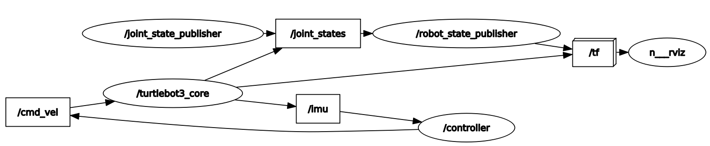

Module 7: Launch Files
Contents
Module 7: Launch Files#
Purpose#
Large applications in robotics typically involve several interconnected ROS nodes, each of which have many parameters. Your current setup is a good example: as you experienced in the IMU lab, you had to open 3 different terminals to run all of the nodes necessary for our system to that point:
Robot:
turtlebot3_core.launch
Master:
roscore
lab2/turtlebot_controller.py
This problem is only going to get more complex as we add additional functionality to our robot. As it stands right now, every node requires a separate terminal window and the associated command to run it. Using the roslaunch tool, we can eliminate that administrivia of running each node separately. We will create/edit two launch files to bring up the nodes on the master and robot.
roslaunch#
The roslaunch tool is used to launch multiple ROS nodes locally and remotely via SSH. We can run nodes that we have created, nodes from pre-built packages, and other launch files. The roslaunch tool takes in one or more XML configuration files (with the .launch extension) that specify the parameters to set and nodes to launch.
A launch file is an XML document which specifies:
which nodes to execute
their parameters
what other files to include
An XML file stands for Extensible Markup Language (XML). This is a markup language that defines a set of rules for encoding documents in a format that is both human-readable and machine-readable. That isn’t necessarily important for this class, but you can read about XML on Wikipedia if you are interested.
We will then use a tool embedded within ROS called roslaunch to easily launch multiple nodes or even other launch files.
By convention, we will give our launch files the .launch extension and store them in a launch folder within our package. This isn’t required, but it is the common convention.
Current State#
In this section we will first use the conventional technique to bring up all of the nodes required for Lab 2 using the currently understood techniques.
Open a new terminal on your Master and start roscore:
roscore
Notice, running roscore now monopolized that terminal and you can no longer use it for anything else.
Open a new terminal or tab on your Master and run the controller.py node:
rosrun lab2 turtlebot_controller.py
At this point we are done with the master. We only needed to bring up two terminals, however, this is still a relatively simple system in teh grand scheme of things.
📝️ Note: We did need to keep the terminal with the turtlebot_controller.py node open so we can enter commands.
We can now transition to the robot and bring up the required nodes.
Open a new terminal window on the Master and use SSH to create a secure shell into the Robot:
ssh pi@robotX
Utilize the SSH instance to start the turtlebot3_core launch file:
roslaunch turtlebot3_bringup turtlebot3_core.launch
Overall you needed 3 terminal windows, including one SSH connection, to bring up this relatively simple system of sensors.
Kill all nodes and roscore.
roslaunch on the Robot#
Navigate to one of the terminals with a secure shell connection to the robot.
Open the turtlebot3_core.launch file:
rosed turtlebot3_bringup turtlebot3_core.launch
At this time, the turtlebot3_core.launch file includes everything you need to run the robot’s core functionality (driving and reading data from the IMU). Let’s talk about each line of the file:
Most launch files will start with this line of code to setup formatting. This particular launch file did not include it, but it is good to use in launch files built during labs.
<?xml version="`.0?>
This line is the XML prolog, which is optional, but enables editors to include proper formatting for an XML file since the extension of a launch file is .launch instead of .xml.
<launch>
...
</launch>
Every launch file opens and closes with the launch root element.
<node pkg="rosserial_python" type="serial_node.py" name="turtlebot3_core" output="screen">
<param name="port" value="/dev/ttyACM0"/>
<param name="baud" value="115200"/>
<param name="tf_prefix" value="$(arg multi_robot_name)"/>
</node>
The above establishes the node to create a serial connection to the Turtlebot3. We can see a few parameters were set, port and baud, to help in establishing the connection.
Close the editor: ctrl+x
roslaunch on the Master#
Navigate to your lab2 package on the Master and create a launch directory:
roscd lab2
mkdir launch
cd launch
touch lab2.launch
Open the launch file to edit (I recommend using sublime).
Now we are going to edit the launch file to bring up all of the nodes (both on the Master locally and remotely on the Robot)
📝️ Note: roslaunch will look to see if roscore is started. If it is not, it will automatically run roscore.
Add the following to the lab2.launch file
<?xml version="1.0"?>
<launch>
<!-- Bring up all local nodes first -->
<!-- model to visualize the Turtlebot3 in RVIZ -->
<include file="$(find turtlebot3_bringup)/launch/turtlebot3_model.launch"/>
<!-- controller to rotate the robot -->
<node
name="controller" pkg="lab2" type="turtlebot_controller.py"
output="screen" launch-prefix="xterm -e"
/>
<!-- remote nodes -->
<machine
name="robot0"
address="robot0"
env-loader="/home/pi/robot_ws/devel/remote_env_loader.sh"
default="true"
user="pi"
/>
<!-- core functionality of the Turtlebot3 -->
<node machine="robot0" pkg="rosserial_python" type="serial_node.py" name="turtlebot3_core" output="screen">
<param name="port" value="/dev/ttyACM0"/>
<param name="baud" value="115200"/>
</node>
</launch>
📝️ Note: Remember earlier how we reminded you that we need to keep the terminal available for the controller to type commands. By using the two additional parameters screen and launch-prefix, we can ensure the terminal is available for use.
Save and close the launch file.
Setting up remote connectivity#
Before we can run the above launch file we need to accomplish some steps to ensure we can connect remotely to our Robot.
Open a terminal on your Master and type the following:
ssh -oHostKeyAlgorithms='ssh-rsa' pi@robotX
Type
yesand press Enter.When prompted, type in the password for the pi user on the robot.
Type
exit.On the Master type the following to create private and public keys:
ssh-keygen -t rsa
Press Enter
Press Enter twice more for no passphrase*
On the Master send the public key to the Robot
ssh-copy-id pi@robotX
Test that you can now create an SSH connection to the Robot without having to enter a password.
In your secure shell to the Robot create a remote ROS environment shell script file:
cd robot_ws/devel/ nano remote_env_loader.shCopy the following environmental variables into the file:
#!/bin/bash source /opt/ros/noetic/setup.bash source ~/robot_ws/devel/setup.bash export ROS_PACKAGE_PATH=~/robot_ws/src:/opt/ros/noetic/share export ROS_HOSTNAME=`hostname` export ROS_MASTER_URI=http://masterX:11311 export EDITOR='nano -w' export HOSTNAME=`hostname` export TURTLEBOT3_MODEL=burger export LDS_MODEL=LDS-01 exec "$@"
📝️ Note: These are the same environmental variables we have inserted to our
.bashrcfiles on the Master and Robot. When we run nodes remotely on a system theremote_env_loader.shfile is loaded instead of the.bashrcfile.Save and exit.
Make the file executable:
chmod +x remote_env_loader.sh
Running Launch Files#
Browse to a terminal on the Master and make and source your workspace:
Utilize the roslaunch utility to execute the lab2 launch file on your Master:
roslaunch lab2 lab2.launch
Open a new terminal and list the running nodes. You should see rosout (roscore), controller, joint and robot state publishers, rviz and the remote node, turtlebot3_core.
In a separate terminal, bring up rqt_graph. Your output should look similar to this:

Checkpoint#
Once complete, get checked off by an instructor showing the output of your rqt_graph node.
Summary#
There is clearly a lot more we can do with launch files, but this will get you started. You now know how to run nodes, other launch files, and provide parameters to a node using a launch file. I encourage you to visit the ROS tutorials online if you need to do more complex functions with the launch files.
Cleanup#
In each terminal window, close the nodes by typing ctrl+c. Exit any SSH connections. Shutdown the notebook server by typing ctrl+c within the terminal you ran jupyter-notebook in. Select ‘y’.
Ensure roscore is terminated before moving on to the next lesson.